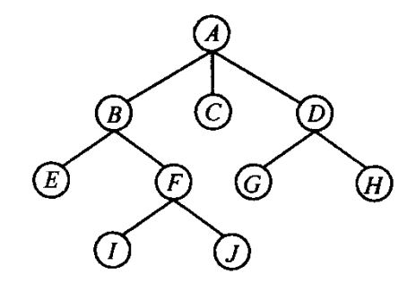
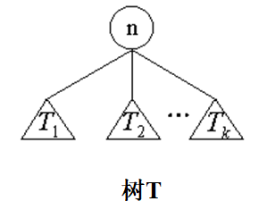
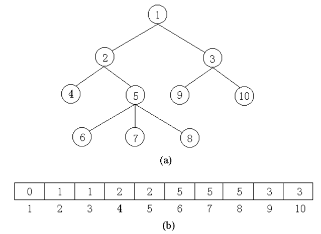
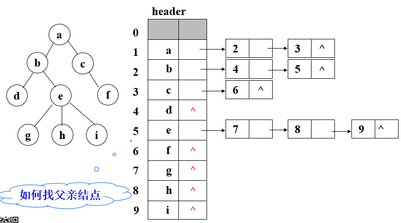
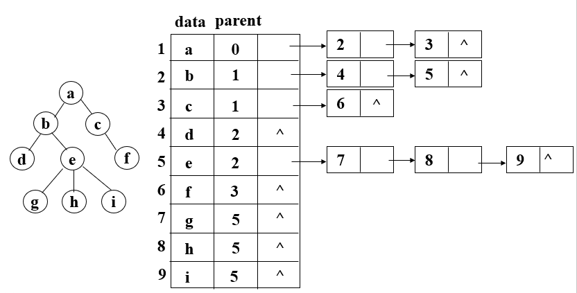
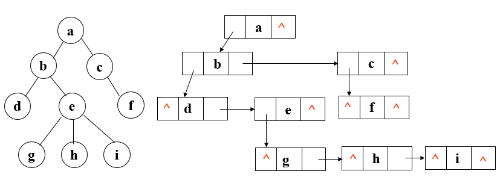

路径长度：路径所经过的边的数目。
节点高度：从该结点到各叶结点的最长路径长度，例如上图中B，C，D的高度分别是2，0，1
树的高度：（这里规定单根的高度为0）根结点的高度
结点的深度(或层数)：从树根到任一结点n有唯一的路径，称该路径的长度为结点n的深度(或层数)。从根结点算起，根为第0层，它的孩子为第1层……
森林：m(m>=0)棵互不相交的树的集合


(1)树中的结点数字化为它们的编号1,2,…,n。
(2)用一个一维数组存储每个结点的父结点。即：father[k]中是存放结点k的父结点的编号。
(3)由于树中每个结点的父结点是唯一的，所以父结点数组表示法可以唯一表示任何一棵树。

如果要查找父节点，可以再数组中添加一个parent域，用来存储每个节点的父节点对应数组下标。如下图：


实现：用二叉链表作树的存储结构，链表中每个结点的两个指针域分别指向其最左儿子和右邻兄弟